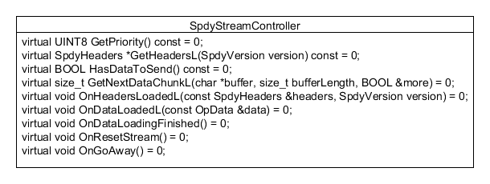
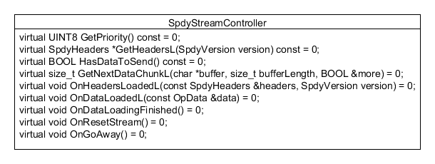
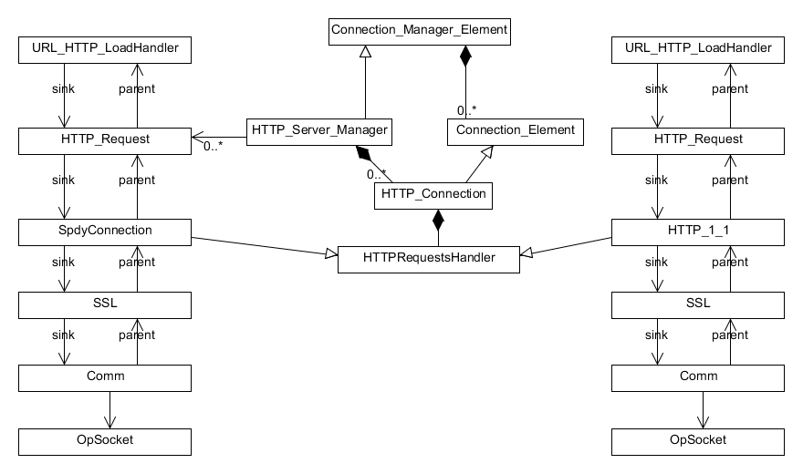
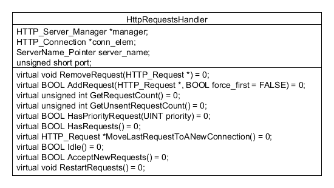
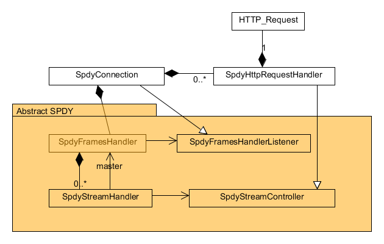
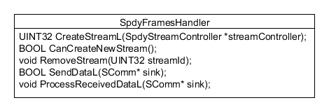
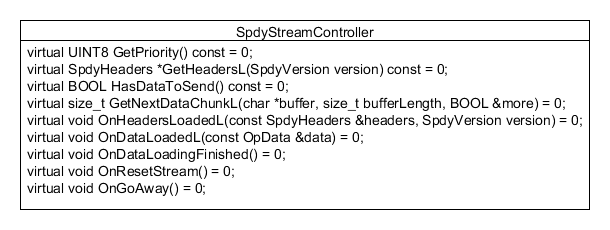
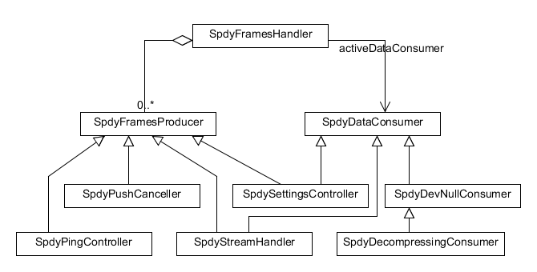
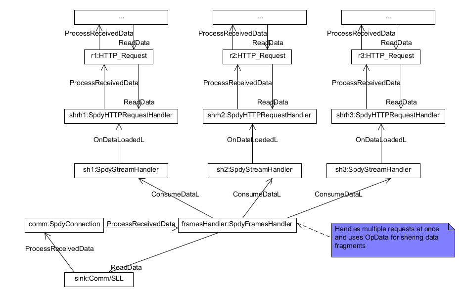

Copyright © 1995-2012 Opera Software ASA. All rights reserved. This file is part of the Opera web browser. It may not be distributed under any circumstances.
SPDY is a binary protocol designed by Google to mitigate many HTTP problems like additional round trips for connection setup and slow-start delays.
Quoting SPDY Protocol - Draft 3:
“ISPDY adds a framing layer for multiplexing multiple, concurrent streams across a single TCP connection (or any reliable transport stream). The framing layer is optimized for HTTP-like request-response streams, such that applications which run over HTTP today can work over SPDY with little or no change on behalf of the web application writer"
...
"SPDY is intended to be as compatible as possible with current web-based applications. This means that, from the perspective of the server business logic or application API, the features of HTTP are unchanged. To achieve this, all of the application request and response header semantics are preserved, although the syntax of conveying those semantics has changed."
This document doesn't describe the protocol itself but only it's imeplementation in the Opera Browser. To learn more about the SPDY protocol please read: SPDY/2 and SPDY/3 drafts.
Opera's SPDY implementation currently supports all features of the spdy/2 and spdy/3 protocols, except for:
Quoting SPDY Protocol - Draft 3:
"A SETTINGS frame contains a set of id/value pairs for communicating configuration data about how the two endpoints may communicate. SETTINGS frames can be sent at any time by either endpoint, are optionally sent, and are fully asynchronous. When the server is the sender, the sender can request that configuration data be persisted by the client across SPDY sessions and returned to the server in future communications."
After considering privacy issues, settings persistence feature has been implemented with the following restrictions:
serverName->GetAcceptCookies()),
The design goal for the implementation was to minimize changes to existing HTTP protocol stack and thereby lower the regression risk in the good old HTTP. On the other hand we wanted to re-use the code responsible for creating and managing HTTP connections.
From the HTTP_1_1 class we've extracted HttpRequestsHandler abstract class, which became a base for all classes capable of handling HTTP requests (represented by HTTP_Request class). In result we've ended up with a model shown on the UML diagram below:
 
The SpdyConnection class inherits from HttpRequestsHandler and therefore is able to handle HTTP requests. As opposed to HTTP_1_1,
SpdyConnection doesn't need to be known to (or even worse - friended by) HTTP_Request class. It's the connection that handles requests
not the other way around so the request shouldn't be aware of what kind of connection is taking care of it. The dependency between HTTP_1_1 and HTTP_Request
has been kept though, to avoid the risk of regressions in HTTP protocol. For clarity, the HTTP_1_1 conn field in the HTTP_Request
class has been renamed to HTTP_1_1 http_conn.
SpdyConnection doesn't know much about the SPDY protocol, it just handles various connection and protocol events, adding/counting/removing requests,
and when needed - moving unfinished requests to another connection.
For dealing with the SPDY protocol the SpdyConnection class needs to know only three of the classes from Abstract SPDY layer. Those three classes constitute the external interface of the Abstract SPDY layer which can also be used for other communication, not necessarily related to HTTP. They are:
In the SPDY protocol resources are requested from the server side by opening streams with appropriate headers (and possibly sending data). Then the server side may accept the stream and send it's own headers + data in response, or refuse the stream. The SpdyFrameHandler class is responsible for creating and handling streams, but it needs to know what headers should be sent and what to do with the received data. This is the role of SpdyStreamControler. SpdyStreamControler is a listener and data provider in one. It's responsible for providing all information needed for creating the stream and is fed the data loaded from the stream.
In order to make a request the SpdyConnection class calls CreateStreamL() on SpdyFramesHandler and provides
a SpdyHTTPRequestHandler (inherited from SpdyStreamController) associated with a given HTTP_Request as a parameter.
The UML diagram below shows the dependencies and responsibilities of each classes.



The Abstract SPDY layer provides a framing layer which multiplexes a TCP connection into independent, length-prefixed frames. The goal was to design it in a way that enables using it also for purposes other then carrying HTTP requests. It's interface (decribed above) enables any communication utilizing concurrent streams on a single connection. For that reasons it doesn't know anything about HTTP and in particular about HTTP requests.
The heart of the Abstract SPDY layer is SpdyFramesHandler which is responsible for the SPDY framing layer. It parses the incoming data in search of specific headers, handles incoming and outgoing frames for concurrent streams and notifies the listener when it has some data to send or when something requiring it's attention happens in the protocol (e.g. ping timeout, goaway message, protocol error).
SpdyFramesHandler doesn't produce SPDY frames on its own but keeps a priority ordered list of FrameProducers that are responsible for that.
Examples of SpdyFrameProducers:
When receiving data from a server frames can be retrived in many small chunks. In the worst case scenario we could receive a 1-byte length chunk which cannot even be parsed as a valid frame header. SpdyFramesHandler buffers received data until it can parse it as a valid frame header. In the case of frames having a payload beside the header (like SYN_STREAM, SYN_REPLY, SETTINGS or HEADERS) the incoming payload data is passed to appropriate SpdyDataConsumers. On a single connection there can be only one DataConsumer awaiting payload associated with a recently received frame. If there is one then SpdyFramesHandler keeps a pointer to it. When this pointer is NULL an attempt is made to parse the next incoming data chunk as a frame header again.
Examples of SpdyDataConsumers:
The UML diagram below shows the described classes and their dependencies:

Unlike the HTTP_1_1, SpdyConnection handles multiple requests at the same time and it can not operate on a single static memory buffer. To solve that problem every received data chunk is added the OpData buffer in the SpdyFramesHandler and shared with data consumers via copying OpData objects.
The diagram below shows the data flow in SPDY protocol:

PUSH and HINT should be implemented as soon as we have something to test it on, and some evidence of actual usage on the web.